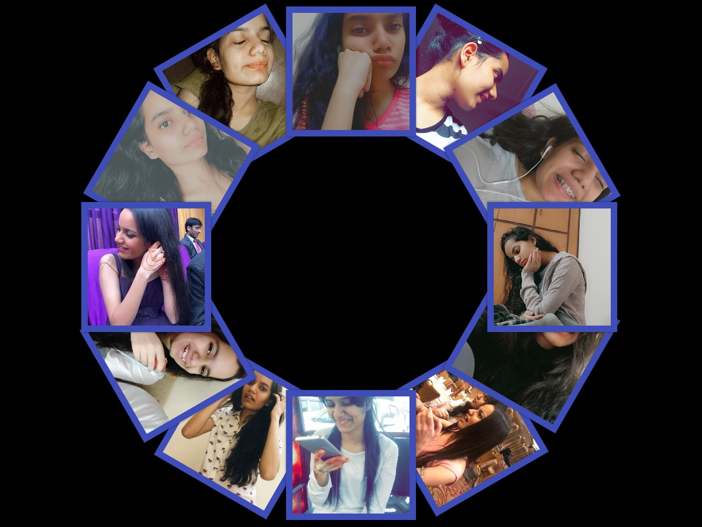

|  |
My dear Khushi, it is I your Magic Mirror. You were in my visions again the other night. You see, as your Magic Mirror, I frequently see what you're up to. You are my Eternal Muse! And I've seen so much beauty ~ So much abundance ~ So much potential in you. Even during these difficult times ~ You’ve kept your grace ~ This is how I know, beyond all doubt ~ That the best has yet to come for you. Not by far Khushi! Now, I usually keep my Mirrorly visions to myself. (Destiny and the space-time continuum are fragile things, you see.) But since we're in this quiet space, I'm going to bend this cosmic law and show you a slice of your destiny in the very near future. Are you ready for it? Take a deep breath, and listen carefully: You are about to become someone who has it all. Someone who savors the best life has to offer. Someone who no longer lives by the illusion of lack or insufficiency. Someone with the time, freedom, and resources to gleefully sculpt reality to your advantage. It's a wonderful turning point for you Khushi. And it all begins right now when you make the simple choice to look within ~ |